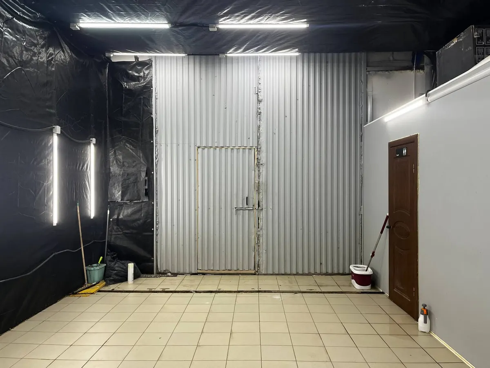
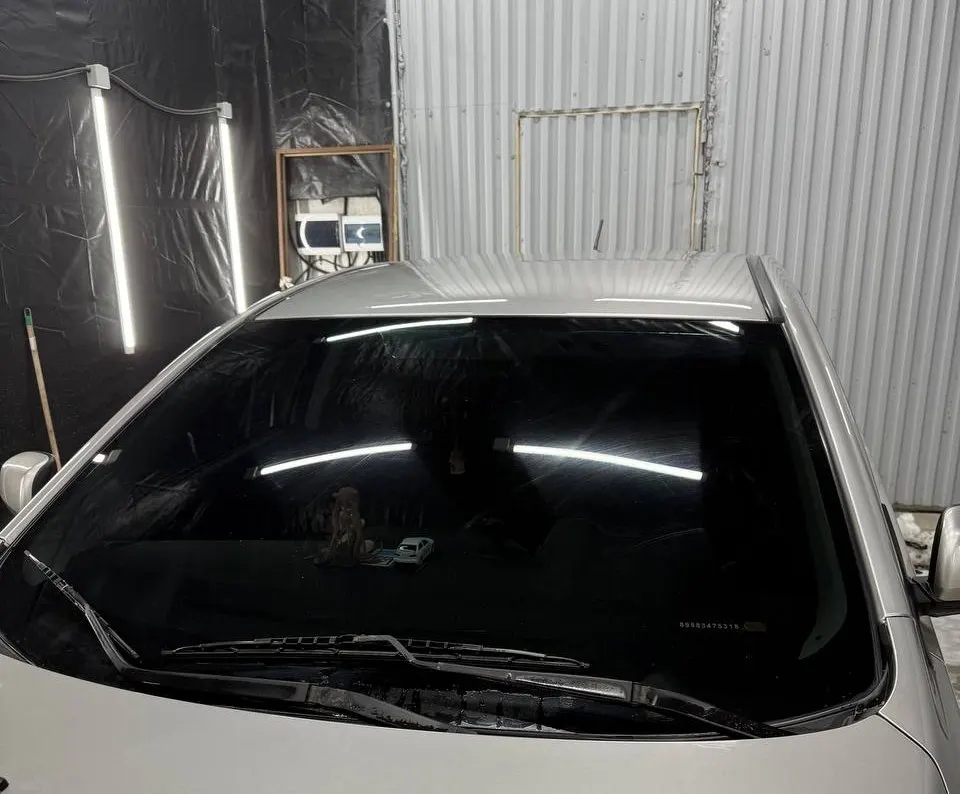
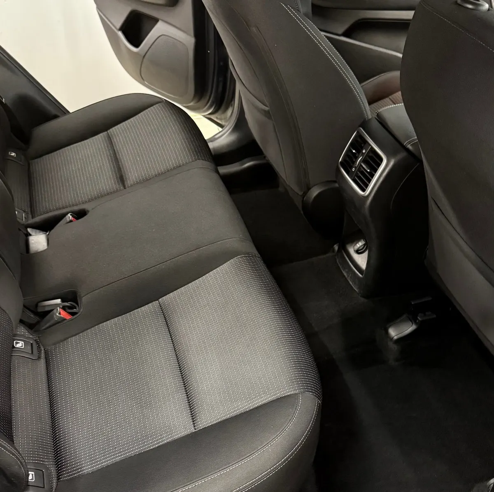
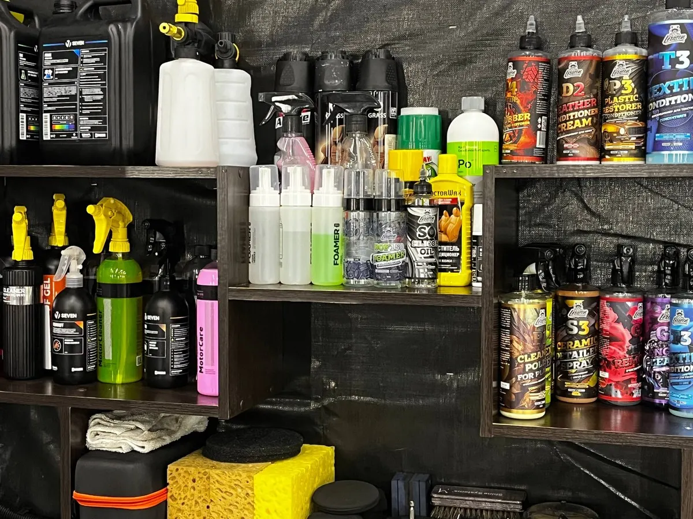

Тонировка, химчистка, оклейка · Калуга, Комсомольская Роща, 39А
Тонировка, химчистка и оклейка авто в Калуге
Тонировка стёкол, химчистка салона и кузова, полировка стёкол, защитная плёнка. Цены от 1 000 ₽, итог называют по вашей машине. Запись по телефону, ежедневно 10-22.
- 4,6 на Яндекс Картах, 10 отзывов
- Тонировка, химчистка, полировка стёкол, плёнка
- Комсомольская Роща, 39А, ежедневно 10-22

Что делают и что считают отдельно
Входит
- Тонировка стёкол: передняя и задняя полусфера отдельно
- Виды тонировки по карточке: хамелеон, по ГОСТу, зеркальная, атермальная, цветная
- Химчистка салона и кузова, обслуживание дисков, полировка и шлифовка стёкол
- Оклейка плёнкой, защита краски, бронирование автомобиля
Отдельно, если нужно
- Сложные и большие работы: цена растёт с площадью и категорией автомобиля
- Химчистка салона: итог зависит от степени загрязнения и выбранных услуг
- Оклейка под такси и защитная плёнка: сумма зависит от типа машины
- Ремонт царапин: цену называют после осмотра
Услуги и цены
Цены с карточки на Яндекс Картах: везде «от», итог зависит от сложности работы и категории автомобиля.
Тонировка
- Тонировка передней полусферылобовое стекло и боковые стёкла передних дверей1 000 ₽
- Тонировка задней полусферызаднее стекло и боковые стёкла задних дверей1 000 ₽
Химчистка и стёкла
- Химчистка салонапластик, сиденья, пол, ковры, дверные карты, потолок, багажник, система вентиляции1 000 ₽
- Химчистка кузовалюбой сложности, в том числе подкапотное пространство2 500 ₽
- Полировка стеклапо сложности и площади полировки2 500 ₽
- Шлифовка стеклапо сложности и площади полировки2 500 ₽
Плёнка
- Оклейка плёнкой для таксилюбой сложности, цена зависит от типа автомобиля5 000 ₽
- Оклейка защитной плёнкойлакокрасочное покрытие, в том числе отдельные детали; в среднем от этой суммы10 000 ₽
Цены на карточке давно не обновлялись, это стартовые суммы. Итог называют при записи, после описания задачи.
Как проходит визит
- 01
Позвонили
Опишите задачу и выберите день и время в форме: готовый текст для разговора подставится сам.
- 02
Цена и время
Мастер объясняет, какие работы будут сделаны, называет цену и подбирает удобное время.
- 03
Работа в боксе
Машина стоит в светлом боксе под яркими лампами, мастера работают на ваших глазах.
- 04
Выдача
Смотрите результат вместе с мастером, вопросы решаются на месте.



Что пишут клиенты
Быстро отвечают
По отзывам, на сообщение отвечают сразу, всё подробно объясняют и записывают без задержек.
Подбирают удобное время
Клиенты отмечают, что мастер ждал к назначенному часу и не заставил ждать.
Широкий выбор услуг
От тонировки и химчистки до полировки стёкол и оклейки плёнкой - в одном боксе.
Цены, которые хвалят
В отзывах пишут, что на химчистку и оклейку стёкол цены одни из самых низких в городе.
Отзывы с Яндекс.Карт
«Нашла ребят на Авито, но тут тоже хочется отметить, чтобы место было заслужено оценено на 5 звезд. Искали химчистку, тк возим детей, много где ездим, иногда они едят прямо в машине, но и как результат, в салоне мягко говоря грязновато. Оперативно договорились, быстро и качественно сделали. Ощущение новой машины.»
Анастасия Дубова · 25 апреля
«Отличное место, делал тонировку и химчистку салона, а также отполировали стёкла и помыли машину. Ребята справились на отлично и быстро. Спасибо, приеду снова, результатом доволен)»
Tika · 6 февраля
«Спасибо ребятам, сделали тонировку быстро и качественно, клиентоориентированность на высоте, однозначно рекомендую. Обязательно вернусь!»
Владимир Шестаков · 5 мая
Отзывы с карточки на Яндекс.Картах, без правок.
Частые вопросы
Нужна ли запись?
На карточке отмечена предварительная запись. По отзывам, на сообщение отвечают быстро и подбирают удобное время.
Какую тонировку можно сделать?
По карточке: хамелеон, по ГОСТу, зеркальная, атермальная и цветная. Какая подойдёт именно вам, подскажет мастер при записи.
Сколько стоит работа?
На карточке все цены стоят с пометкой «от»: тонировка полусферы и химчистка салона от 1 000 ₽, полировка стекла и химчистка кузова от 2 500 ₽. Итог зависит от сложности и категории автомобиля.
Чем можно оплатить?
На карточке указаны: наличные, банковская карта, перевод, СБП, безналичная оплата.
Где вы находитесь?
Улица Комсомольская Роща, 39А, бокс 11, Калуга. На карточке отмечена парковка.
Позвоните и запишитесь на удобное время
- Адрес
- улица Комсомольская Роща, 39А, бокс 11, Калуга
- Часы
- ежедневно 10:00-22:00
- Телефон
- +7 (995) 502-18-89